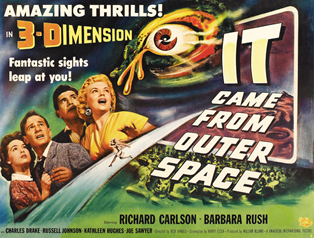

Introduction
Saul Bass is one of the most accomplished designers in graphic design and motion graphics. His work varied across many different industries with having created iconic logos and movie posters. His minimalist design style has stood the test of time with organisations such as the girl scouts largely unchanged, still using the same silhouette with slightly varying changes.
Saul Bass moved to New York in 1920. At this point in his life he was doing freelance illustration work for local shop fronts. This earned Saul a scholarship to the Art Students League where he studied “layout and design for industry”. The term Graphic Design hadn't been coined yet but it focused on the same practises. His use of simple shapes and as well as form and function within his works was heavily influenced by his teacher Gyorgy Kepes. Kepes attended the Bauhaus school in Germany where their design principles mainly focused on form and function. Using minimalism to convey different messages, feelings and emotions within the design work. This spurred Saul Bass to use these principles in each of his works, in his own words on the topic of his opening title sequences “My initial thought about what a title can do was to set mood, and the prime underlying core of the film’s story, to express the story in some metaphorical way. I saw the title as a way of conditioning the audience, so that when the film actually began, viewers would already have an emotional resonance with it”.

The first poster which marked Saul Bass’ name within the industry was the poster for Otto Preminger’s Carmen Jones. The poster presents a still black and white image of the leading actress Dorthy Dandrige. The only other colour included is the red which is seen on her dress and her lips. This simple detail represents the fiery seductive nature of the film’s leading character. This as previously mentioned was abnormal to have such a minimalist approach as films of the day would plaster character faces as well as descriptions onto posters as this was the method of marketing at the time. This is taken for granted today as alot of films market their movies this way. Take this sielnce of the lambs poster, it uses minimal colour. The only colour appearing in clarice's eyes and the moth. The moth is a deathmoth which buffalo bill obseeses over in the film. This shows how colour can express elements of a film. In Saul Bass' time this was a game-changer. This method of design to encapsulate the tone of film was used again and again throughout Saul Bass’ career and can be seen most notably in his famous title sequences. This has influenced many aspects of design and marketing not only in film, but in all forms of product design and advertising as evoking emotional responses within the audience sells, so Saul Bass’ influence cannot be underestimated. In this essay we will cover the significance of Saul Bass’ career within graphic design in film, and in logo design. These both have influenced the current way we design today so discussing these two aspects of Saul Bass’ career will be of most use.

He began his commercial career after leaving Art Students League as a label designer and a designer for a photo-offset plant. He then went on to design trade ads for United Artists. Since joining the United Artists, Saul was already becoming a prominent designer within film marketing. He pushed the boundaries visually by creating designs which reflected the story of the film in terms of mood and atmosphere. Initially he solely used graphic design but then began to include photography to portray the characters of the film. This was important within film marketing as up until this point film’s were marketed the same as newspapers and other forms of media where which simply was to say “Go see this film”, with a clutter of other information crammed into one poster. Saul reduced what was needed on the poster which made each element more important and detailed in meaning. Including the emotions of what a movie wanted to convey, condensed onto a canvas was unprecedented.